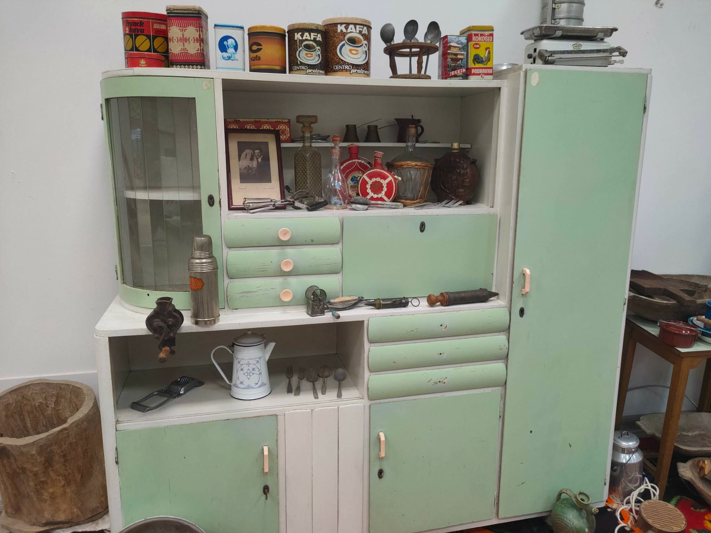

Ovo je okvirni prikaz prostora za glavnu izložbu. Kasnije možeš ubaciti stvarne
fotografije, nazive eksponata i detalje o programu.
Pozivnica
Između žetve i sećanja
Postavka posvećena alatima, predmetima i običajima koji čuvaju priču o radu,
domaćinstvu i zajednici.
Dvorana zbirkeDo 30. septembraUlaz slobodan
Ovde će kasnije stajati opis postavke, spisak predmeta i praktične informacije
za posetioce.
O udruženju
Četrdeset godina posvećenosti
Udruženje okuplja agronome, poljoprivrednike i ljubitelje nasleđa sa ciljem da
sačuva sećanje na alate, običaje i rad koji su oblikovali domaćinstva i lokalnu
zajednicu.
Prostor je zamišljen kao jednostavan, topao i pregledan sajt sa svim ključnim
informacijama, ali i sa dovoljno karaktera da izgleda kao premium prototip.
1984Godina osnivanja120+Predmeta u zbirci12Izložbi i programa
Arhiv
Prethodne izložbe
2024
Prvi prototip sajta za izložbu iz 2025. godine, sa rustikalnim tonom, toplim braon
nijansama i jasnom strukturom za sve ključne informacije.
Alati, oruđe i svakodnevni predmeti iz poljoprivrednog života.
Arhiv 2025
Prethodna izložba
Predmeti domaćinstva, posuđe i porodične priče sa sela.
Prethodna izložba iz 2025. okupila je predmete domaćinstva, stare uređaje,
ručno rađeni tekstil, posuđe, knjige i pokućstvo iz različitih perioda XX veka.
Na osnovu tvojih fotografija, postavka je imala naglašenu priču o radu, sećanju i
svakodnevici u kući i na imanju.

Bakra i vatra
Glavna celina
Domaćinstvo, tekstil i tehnika
Centralni deo postavke prikazivao je kućni inventar, nameštaj, vezene tekstile,
stare radio-aparate, telefone i gramofone, uz predmete koji govore o navikama i
ukusu jednog vremena.
DomaćinstvoTekstil i vezTehnika i pokućstvoNajavljeno
Predstojeće izložbe
Više o postavci
Izložba je bila organizovana kao pregled domaće kulture: od kuhinjskog ormana i
starog pokućstva, preko ručnih radova i vezenih peškira, do kolekcije telefona,
gramofona, knjiga i drugih svakodnevnih predmeta.
Polje i predmet
Ranorekolski alati i biljni uzorci iz arhive udruženja.
Ovde će ići program, gosti i tačan raspored otvaranja izložbe.
Čuvanje domaćeg nasleđa
Jesen · 8. oktobar
Bakra i vatra
Kuhinjsko bačvarstvo i bakarni pribor iz starog domaćinstva.
Udruženje okuplja ljude koji čuvaju predmete, običaje i priče iz domaćinstava,
radionica i seoskog života. Na fotografijama iz 2025. vidi se kako zbirka povezuje
staru tehniku, tekstil, knjige, posuđe i pokućstvo u jednu celinu.
Zbog toga je ovaj prototip zamišljen kao jednostavan, topao i pregledan sajt sa
stvarnim vizuelnim materijalom, ali i sa dovoljno karaktera da izgleda kao ozbiljan
projekat za prezentaciju.
2025Prethodna izložba
Iz novina4Glavne celine postavke
9+Tipova predmeta na fotografijama
Kustos poklanja radnu kolekciju gradu
Izveštaj iz kulturnog priloga
3. mart 2024
Etnografska komisija obilježava zbirku
Regionalni dnevnik
Sadržaj 2025
Šta je obuhvatila postavka
Ova tri bloka predstavljaju najprepoznatljivije celine iz prethodne izložbe i daju
čitaocu brz pregled onoga što se moglo videti u prostoru.
Otvorena četvrta dvorana muzeja
Poljoprivredni vestnik
Celina 01
Domaćinstvo i pokućstvo
Kuhinjski ormani, stolovi, stolice, posuđe i predmeti svakodnevice.
Galerija
Prostor za fotografije
galerija postavke, detalja eksponata i atmosfere događaja.
Celina 02
Tekstil i vez
Vezeni peškiri, stolnjaci, ponjave i ručno rađeni komadi tekstila.
Centralni pogled na postavku
Celina 03
Tehnika i pamćenje
Radio-aparati, telefoni, gramofoni, knjige i drugi predmeti koji čuvaju trag vremena.
Detalj
Ručni alati i teksture
Fotografije 2025
Vizuelni zapis izložbe
Ambijent
Ove fotografije prikazuju isti koncept iz različitih uglova: kućni kabinet, tekstil,
stare uređaje, nameštaj, knjige, telefone i predmete raspoređene kao mala
etnografska arhiva.
Kabinet
Domaći inventar i posuđe
Rezerviši posetu ili pošalji upit
Ovaj blok služi kao privremeni kontakt prostor. Kasnije može da sadrži stvarni
kontakt, mapu, radno vreme i obrazac za prijavu.